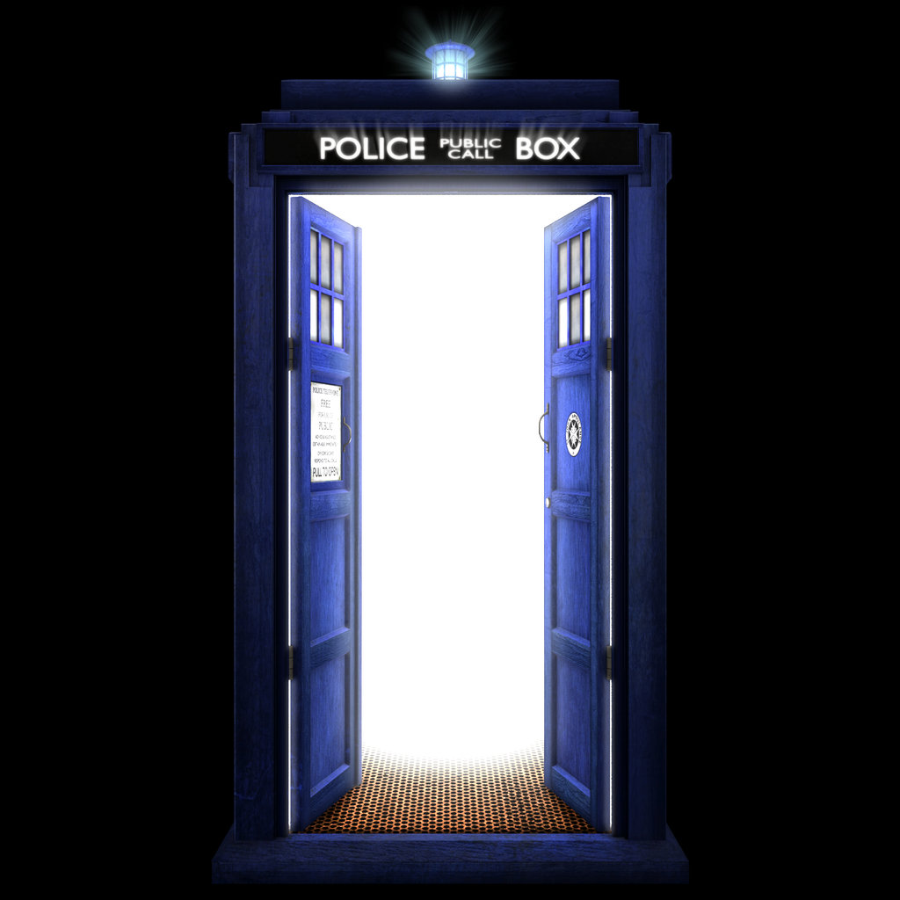

Try to guess the Doctor Who companion by entering a name from the list
- Amelia
- The Doctor meets Amy Pond when she is still a young Scottish girl with a hole in her wall.
- Donna
- When Donna's wedding really does not go as planned, she meets The Doctor and they go on their first adventure
- Rose
- After a nightmare shopping trip, Rose would have been a dummy not to travel with The Doctor.
- Martha
- It's not every day that the building you're in ends up on the moon. It became a medical necessity to travel with The Doctor.
- Clara
- The girl who lived. Or died, repeatedly. It's all about perspective. Being good with kids gave Clara an advantage while traveling with the doctor.
Study site to know more Who!